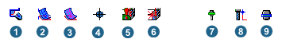
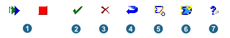

Contours
Unlike other 2D cycles, you cannot select contours for Playback Milling. Furthermore, the tool always moves along the selected contour.
Playback path
|
|
Contours: Click one of the icons if you want to create or modify a playback path. Note that the settings for displaying the tool are only displayed if a corresponding tool has been selected. |
Top: Specify the Z value of the playback contour.
Perpendicular infeed X / Perpendicular infeed Y: Depending on the tool diameter used, the intersection degree of the drawn toolpath is determined in the relevant direction (value = 0.2 > intersection degree = 20%).
Offset model XY: Accuracy for the tool collision check against the model used (= wall distance).
Fillet radius: The toolpath drawn is rounded with the specified fillet radius. This applies to perpendicular and freely drawn contours.
Coordinate grid: Accuracy of the transfer of X/Y coordinates when specifying the position of the toolpath.
|  |
(1) Allow only perpendicular paths: Only perpendicular paths are possible.
(2) Show playback paths as surface: Displays the playback path as a surface.
(3) Show existing paths: Displays all paths that were drawn using playback.
(4) Show hair cross: The exact tool position is shown in a hair cross.
(5) Activate collision avoidance: There must be a defined model or milling area. The tool is retracted, while taking account of the offset defined for the model.
(6) Enable path collision check: When path collision check is enabled (see 5), an additional collision check is carried out for the path drawn.
(7) Tool display at the last selected point: The tool is displayed at the last selected (point-and-click) point.
(8) Tool display at mouse point. The tool is permanently displayed at the respective mouse position.
(9) Show Tool Holder: Displays the tool holder.
Save contour
In job: This option saves the generated contour in the relevant job. The contour is only displayed if the job is selected in the job list.
In CAD model: This option saves the generated contour in the CAD model.
|  |
(1) Start / stop playback: Starts contour recording for the toolpath. To change the direction, click with the left mouse button and move the mouse to the required destination. All changes in direction are rounded with the radius defined under the fillet radius.
(2) Take contour and close dialog: Take a contour and close the playback dialog.
(3) Cancel contour: Delete a recorded contour.
(4) Cancel last point: Delete the last recorded contour point.
(5) Close contour: Close a recorded contour.
(6) Take contour and start with new contour: Take a contour and start with a new contour. The dialog box remains open.
(7) Open the hyperMILL online help: Start the online help.
Top: Start of machining in Z direction (1).
Bottom: End depth of machining in Z direction (2).
Both parameters are relative to the current frame.
It is possible to have various vertical machining areas for the different machining contours in a job. By making multiple selections, the same top and bottom definitions can be applied simultaneously to different contours.
 |
Both parameters can be defined as absolute and relative values, and as Thickness. Thus top and bottom definitions can be made with various measurements.
Absolute (jobframe) (A): The values you set are relative to the current frame. Use the absolute dimensions when a drawing has no defined Z coordinates (2D drawing). In these cases, define the top (1) as absolute and the bottom as relative or as absolute depending on the dimensions in the drawing (3). Selected contour (2)
Specifying relative dimensions (B): Relative values are relative to the position of the CAD geometry selected in the model. This way of specifying top (1) and/or bottom (3) should be used for drawings that have Z information (for example, 3D contours, solids, defined thicknesses). Here, (2) stands for Z = 0 as the upper edge of the geometry.
Working with thickness (C): Thicknesses are relative to the position of the CAD geometry selected in the model. This way of specifying top (1) and/or bottom (2) should be used for drawings that have Z information (for example, 3D contours, solids, defined thicknesses).
 |